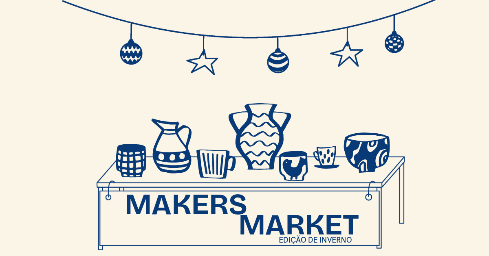

Makers Market.
O ano está a chegar ao fim e estamos muito felizes por o terminar com algo especial: o nosso primeiro Makers Market!
Este ano o estúdio cresceu, e estamos especialmente gratos às muitas ceramistas talentosas que deram workshops connosco e partilharam o seu conhecimento com todos nós. Fosse no torno, na modelagem manual ou num dos nossos workshops mais diferentes, como o de Kintsugi, aprendemos muito, ficámos maravilhados e, claro, divertimo-nos imenso.
No Makers Market vão poder conhecer muitas destas artistas, conversar com elas, ver o seu trabalho e levá-lo para casa. Uma forma garantida de deixar alguém muito feliz neste Natal (ou a vocês mesmos). Estamos sempre à procura de artistas que gostam de criar e querem mostrar o seu trabalho, e queremos criar um espaço onde mentes criativas se possam encontrar.
Tal como na nossa Summer Party, também teremos à venda peças pintadas no estúdio que nunca foram levantadas. Toda a receita reverte para um projeto social ou um abrigo de animais.
E para entrar no espírito natalício, teremos chá, ponche sem álcool e bolachas de Natal à vossa espera, até esgotarem.
Quando e onde
Domingo, 13 de dezembro 10h às 19h Entrada livre Rua Jau 23a, Alcântara
É artista?
Se acha que o seu trabalho combina com o nosso mercado, envie-nos um email com uma breve apresentação e algumas fotografias das suas peças. Ainda temos algum espaço!
Enviar email →